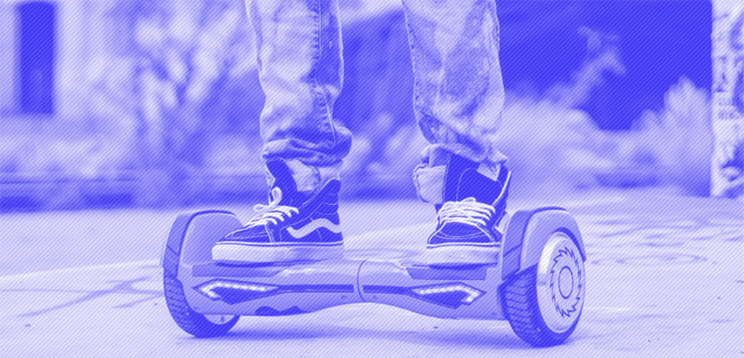
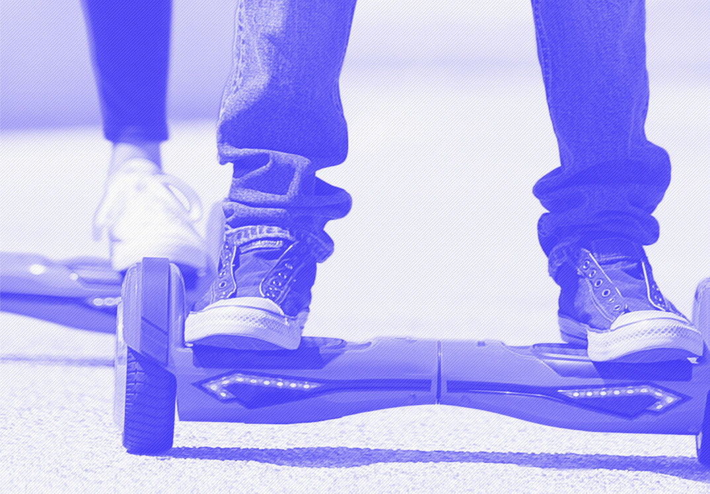
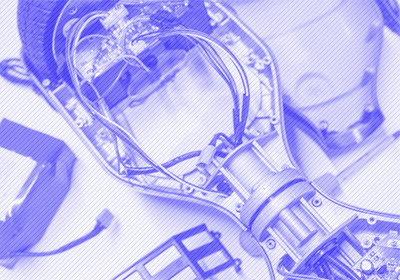

RIZOR HOVERTRAX 4.0
МАНЕВРЕННОСТЬ, ЛЕГКОСТЬ, ЭКОЛОГИЧНОСТЬ

ПРЕИМУЩЕСТВА
ДИЗАЙН
Внешний вид скутера дышит идеями футуризма:
- плавные линии
- подсветка светодиодными индикаторами
- рельефные бамперы, оснащенные защитными панелями
ЦВЕТ
Модель представлена сразу в нескольких цветах.

ИНДИКАТОРЫ
Светодиодные индикаторы сообщают окружающим о запланированном повороте. Своим мерцанием они мгновенно реагируют на смещение центра тяжести в правую или левую сторону.
Как только ваше движение продолжится по прямой, мерцание прекратится, подсветка снова станет в виде сплошной линии.
РЕЖИМЫ
Помимо "умной" подсветкиHovertrax 4.0снабжён двумя скоростными режимами
- Один для продвинутых пользователей
- Второй для новичков
13 км/ч
Максимальная скорость
2
Скоростных режима

АККУМУЛЯТОР
Имеет съемную аккумуляторную батарею. Это позволяет легко вытащить сам АКБ и, к примеру, перевезти весь гироборд в самолёте - это кстати единственный гироскутер, с которым проходит такой "трюк", да и есть документы, подтверждающие лицензию на его производство и использование.
ЭЛЕКТРОНИКА
При эксплуатацииRizor Hovertrax 4.0нельзя не отметить плавность торможения и быстроту набора скорости.
В копилку "плюсов" нужно отнести и безупречную отзывчивость электронной начинки.
Бесшумный двигатель
Встроенный гироскоп
Характиристики
RIZOR HOVERTRAX 4.0

-
КОРПУС
выполнен из прочного пластика, и имеет приятную LED подсветку, дополняющую общий дизайн. Платформы для ног покрыты антискользящим покрытием.
-
КОЛЕСА
Rizor Hovertrax 4.0получил относительно небольшие, но, в целом, среднего диаметра колёса в 6,5 дюймов
-
МОЩНОСТЬ
двигателя в 350 Втобеспечивает комфортное и безопасное передвижение при максимальной скорости в 13 км/ч
-
ВЕС
небольшой вес, приблизительно в12 кгпозволяет относительно компактно переносить гироборд ссобой.
ДЛЯ КОГО
При максимально выдерживаемой нагрузке в 100 кг отлично подойдёт как для подрастающего поколения, так и для более взрослых "наездников".
Это единственный гироскутер со специальным детским режимом езды. Он обеспечивает плавность движения и помогает избежать большинство ошибок управления.
Для любого возраста
Безопасный режим

Отзывы
ОЦЕНКИ ПОЛЬЗОВАТЕЛЕЙ
 СЕМЁН КОНСТАНТИНОПОЛЬСКИЙ
СЕМЁН КОНСТАНТИНОПОЛЬСКИЙ
Скутер понравился, пластик выглядит прочным, и подсветка приятная. Батарея держит примерно час активного катания даже спустя год. Платформа прорезиненная, сцепление хорошее, но если гонять на максималке, всё равно можно упасть.
-
5
Общая оценка
-
5
Надёжность
-
4
Безопасность
-
5
Внешний вид
ВАША ОЦЕНКА
Оцените использование Rizor 4.0 и получите скидку 10% на покупку второго гироскутера

СРАВНЕНИЕ МОДЕЛЕЙ
| 4.0 | 3.0 | |
|---|---|---|
| Вес | 12 кг | 16 кг |
| Нагрузка | до 100 кг | до 80 кг |
| Скорость | до 13 км/ч | до 9 км/ч |
| Мощность | 350 Вт | 200 Вт |
| Время работы | 115 минут | 95 минут |
| Самобалансировка | + | + |
| Режим обучения | + | - |
| Гарантия | 6 месяцев | 3 месяца |